A Beginner's Guide to:
Building a Website with Ruby on Rails!
By Sam Behrens
Before You Begin
This guide will help you build your own website using the Rails Framework for Ruby. You should already have a basic understanding of the Ruby programming language and its syntax and you should know what Rails is. I also highly recommend that you know HTML and CSS. This guide covers only OSX and Linux, however, it would work on Windows with Git Bash rather than command prompt.
I am not going to cover installation of Ruby and Rails so if you haven’t done so, install them now. Here is a useful website for that: installrails.com.
Tip: To zoom in on images, click on them. Then to zoom out, click on them again.
Setting Up Your Project
1. Create a new Rails Project
Open Terminal and navigate to the desktop. This is where you will create your project. To do this, enter:
cd ~/Desktop
It should look like this (Figure 1.1):
(instead of my name, yours will be there)
Figure 1.1
Create your new project.
In Terminal, type:
rails new sample_app
I am going to call my project sample_app but you can enter whatever you want instead. Just remember, any spaces in your name need to be replaced with underscores “_”.
You have just created your first Rails project. Nice job!
Let’s navigate to your new project in the Terminal.
In Terminal, type:
cd sample_app
Done!
2. Start the server so we can see our website
Now that we have our project created, we want to get it running. Here is how to do that.
In Terminal, type:
rails server
This can be shortened to 'rails s'.
You should see something like this (Figure 1.2):
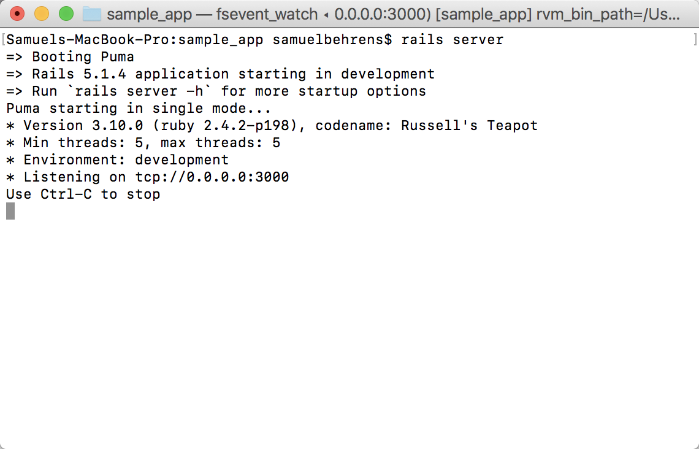Figure 1.2
In your web browser, enter http://0.0.0.0:3000/ and you should see a Welcome to Rails page (Figure 1.3).
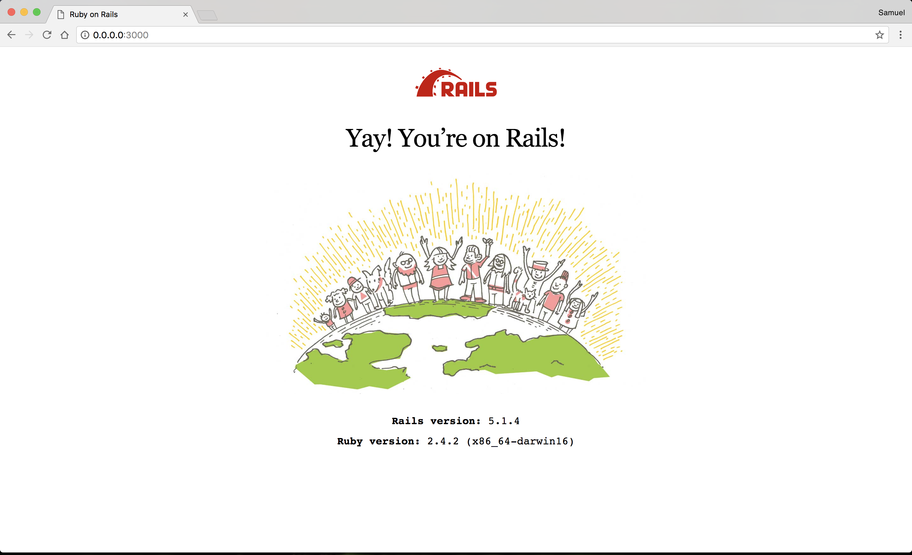Figure 1.3
For the duration of this guide, I will have the server running. Since we are doing this, we need to open a new Terminal window to enter future commands.
Create a Webpage
1. Open your preferred text editor.
I prefer Brackets because it is simple and looks good. A more popular one that you may use is Sublime Text. Both will work for our purposes.
Open your project folder in your text editor. You should be able to see something like this with all of the folders laid out on the left (Figure 2.1).
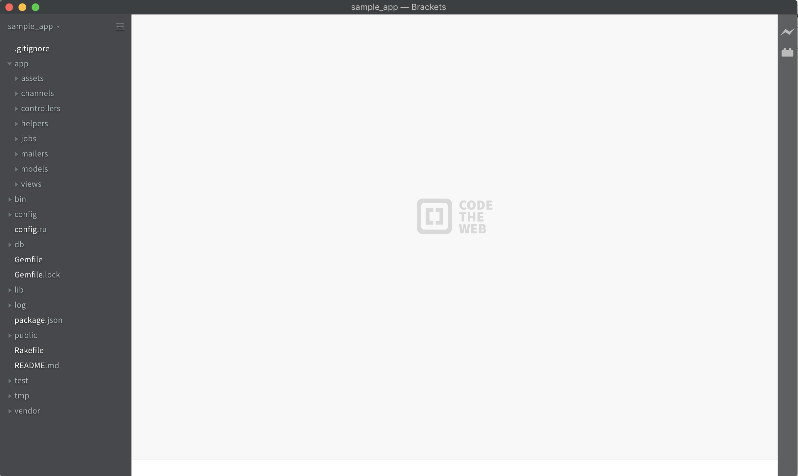Figure 2.1
Take a look around and familiarize yourself with where things are. The main folders to look out for are assets, controllers, models, and views.
2. Let's create our homepage.
First, we need to go back to the Terminal window that we opened after we started our server. Remember not to use the one running the server or you will have to stop it.
In Terminal, type:
rails generate controller welcome homepage
Here, 'generate' can be shortened to just 'g'.
Let's go over what we just did.
We just created a controller and an HTML page in our project.
Our new controller is located in the controllers folder and it is called welcome_controller.rb (Figure 2.2).
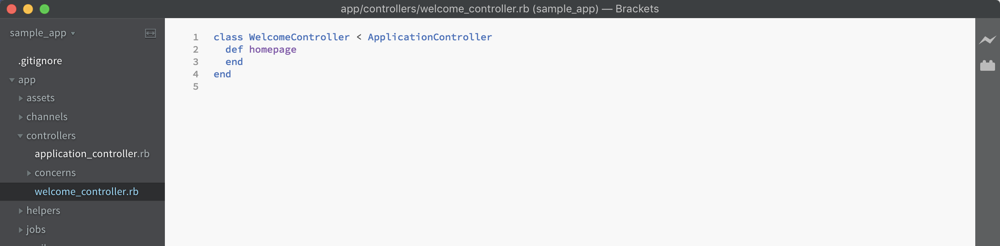Figure 2.2
Our new HTML page is located in views and in the welcome folder and it is called homepage.html.erb (Figure 2.3).
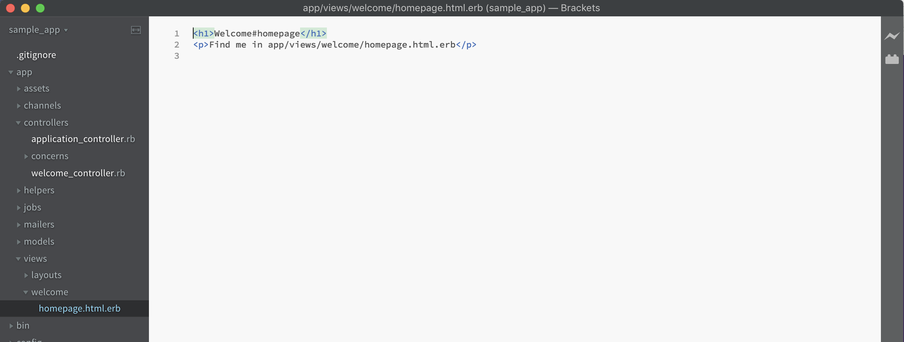Figure 2.3
The '.erb' stands for 'embedded ruby'.
Now, when we reload our website in the browser, nothing has changed. This is what we need to fix next.
3. Change root page.
Go into the config folder and find the routes.rb file. Open it up and it should look like this (Figure 2.4):
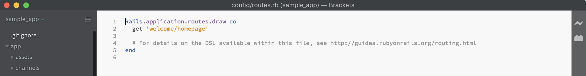Figure 2.4
Under get 'welcome/homepage' type:
root 'welcome#homepage'
Save the file and then reload the page in your browser. It should look like this "(Figure 2.5)":
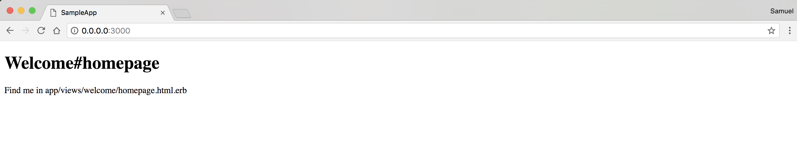Figure 2.5
Awesome! Now we have our homepage up and ready for customization.
Customize Our Page
1. Add some HTML.
Our page is looking pretty dull. Let's spice it up!
Delete everything in the homepage.html.erb file. Replace it with this:
<div id="container">
<h1>Pirate jokes</h1>
<div class="joke">
<h3>Why don’t pirates shower before they walk the plank?</h3>
<p>Because they’ll just wash up on shore later.</p>
</div>
<div class="joke">
<h3>Why is pirating so addictive?</h3>
<p>They say once ye lose yer first hand, ye get hooked!</p>
</div>
<div class="joke">
<h3>How do pirates know that they are pirates?</h3>
<p>They think, therefore they ARRRR!!!!!</p>
</div>
<!--Put image text here-->
</div>
It should look like this in the editor (Figure 3.1):
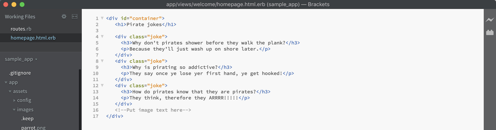Figure 3.1
Reload your browser and see our changes (Figure 3.2).
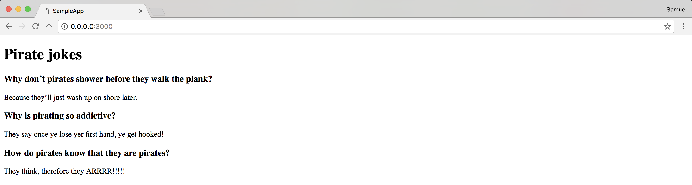Figure 3.2
2. Add some images.
I got some images off of a royalty free website. You are free to use them in your website as well. Just right click on them and click 'Save Image As...'
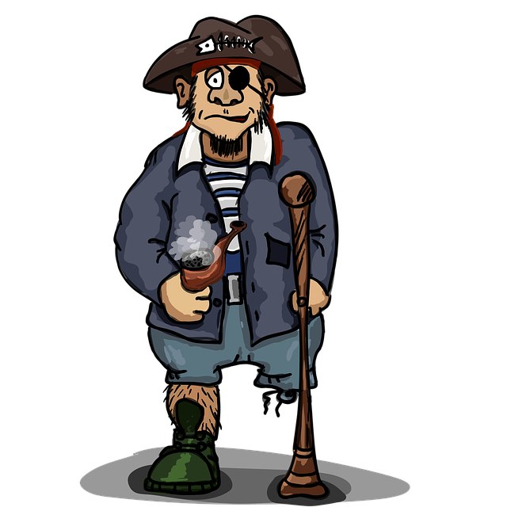Drag and drop the images into the images folder (Figure 3.3) of our project. This is located in assets.
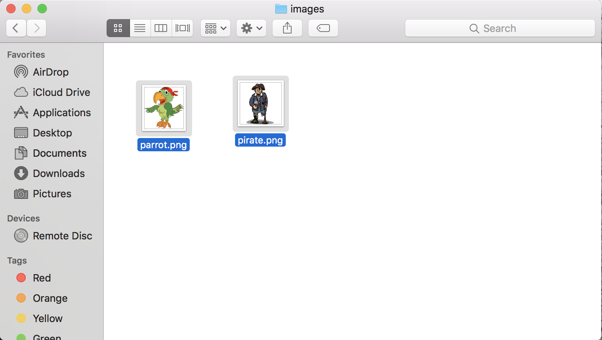Figure 3.3
Go back into our html page.
Replace <!--Put image text here--> with:
<img src="assets/parrot.png"/>
<img src="assets/pirate.png"/>
Now reload your page. You will see the images at the bottom like this (Figure 3.4):
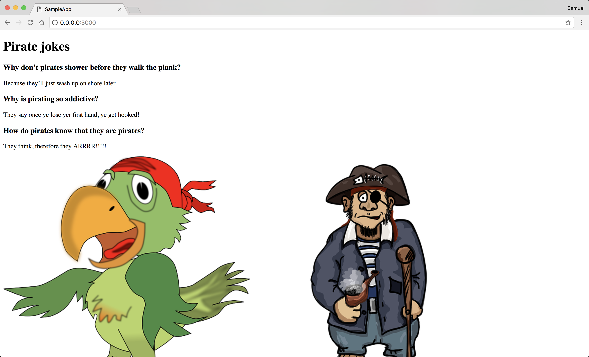Figure 3.4
3. Add some CSS.
Right now, our page is pretty plain, so let's add some CSS to make it more pleasing.
Open our CSS file.
When we created our welcome controller and html homepage, we also automatially created a css page for them. Navigate to assets, then stylesheets and you will see welcome.scss (Figure 3.5).
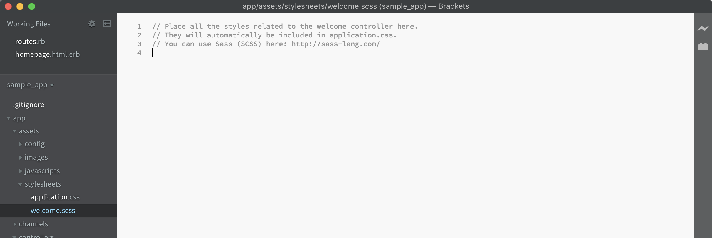Figure 3.5
Add this to that file:
#container {
width: 700px;
margin: auto;
font-family: 'Arial', sans-serif;
}
h1 {
text-align: center;
}
.joke {
border: 2px solid #777;
border-radius: 10px;
margin-bottom: 25px;
padding: 15px;
}
img {
width: 33%;
}
Save your project. Now when you reload your page, it should look like this (Figure 3.6):
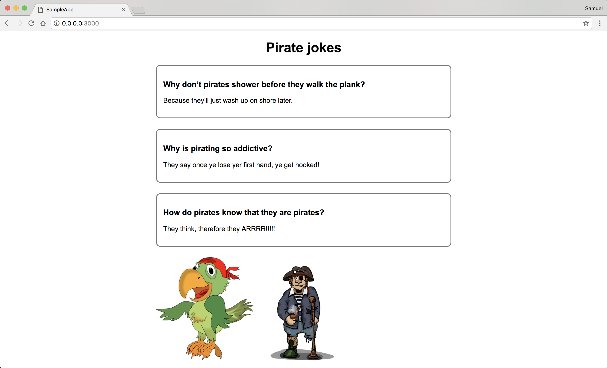Figure 3.6
Doesn't that look better?
Conclusion
That is it!
You did it! You made a simple website with Ruby on Rails. Now that you have the skills to do this, you can go on and challenge yourself with harder projects. This barely scraped the surface of all the functionality that Rails has. Your next challenge is figuring out how to add another page to your website and navigating to it.
Thanks for reading!